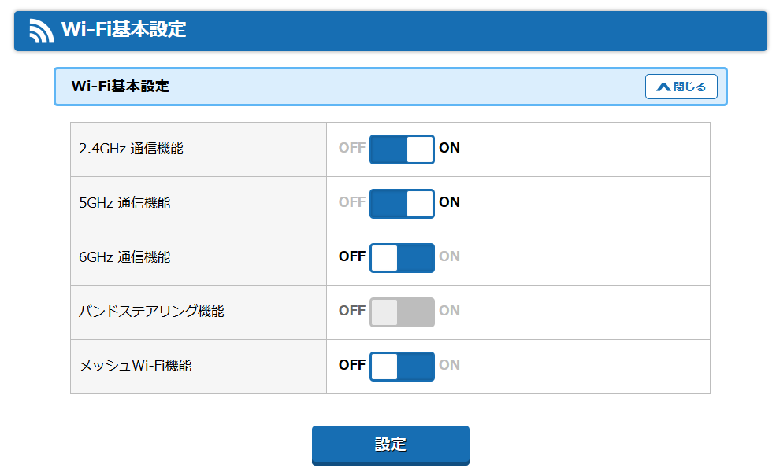

総合セキュリティ【2025】
ブラウザとアドオン
ブラウザとアドオン
インターネット利用の安全性は、まずブラウザ選びで大きく左右されます。
Edge や Chrome はセキュリティ性能が高い一方、プライバシー重視の利用者には不十分と感じる場合があります。
おすすめブラウザ
-
LibreWolf：
Firefox派生で不要機能・通信を削除し、データ収集を無効化。
プライバシー特化設計で広告ブロッカーや安全検索エンジンを標準搭載。
※ LibreWolf は自動更新に対応していないため、公式サイトから手動で最新版を入手・更新する必要があります。
-
Tor Browser：
匿名通信に特化し、追跡防止・広告ブロックを内蔵。
匿名性を最優先する用途に適します。
※ 銀行や決済サイトでは不正アクセス扱いになる場合があり、金融用途には不向きです。
-
その他候補：
Brave（広告ブロック・追跡防止内蔵）、
Floorp（国産Firefox派生・カスタマイズ性高）、
Vivaldi（自由度と細かな設定が可能）。
※補足：LibreWolf の手動更新が面倒な場合は、自動更新と強力な広告ブロックが標準搭載された Brave が、プライバシーと利便性を両立する現実的な選択肢として広く推奨されています。
参考情報：
PrivacyTests.org
では主要ブラウザ（Edge／Chrome／Firefox／Brave／LibreWolf／Vivaldiなど）の
プライバシー保護テスト結果が公開されています。
定期的な検証で「トラッキング防御」「サードパーティCookie遮断」「指紋追跡耐性」などを比較しており、
Brave と LibreWolf が総合的に高評価を獲得しています。
ブラウザ選定の参考にしてください。
おすすめアドオン
-
uBlock Origin：
広告とトラッキングを遮断し、読み込み速度を向上させつつプライバシーを保護。
設定の基本
- 「セキュリティ」→「安全なDNS（DNS over HTTPS）」を有効化。
- 「プライバシー」→「サードパーティCookieをブロック」に設定。
- 「サイトの権限」→「位置情報」「通知」「マイク」「カメラ」は都度確認に変更。
- 「自動更新」を確認し、常に最新の状態を維持（LibreWolfは手動更新）。
セキュリティソフト連携
- ESET：Webアクセス保護／バンキング保護を有効化。
- Kaspersky：ブラウザ保護拡張を使用してフィッシングを防止。
- Norton：Safe Web や Password Manager を利用可能。
- 重複するアドオンを併用しない（競合や誤動作の原因になる）。
※まとめ：
ブラウザは更新頻度と信頼性を重視し、アドオンは最小限にすることが基本です。
「HTTPS Everywhere」は不要（標準統合済み）。
ブラウザ保存のパスワード機能は避け、
Bitwarden や 1Password などのパスワードマネージャを使用してください。
※補足：Chrome / Firefox / Edge には「HTTPS専用モード」が標準搭載されているため、これを有効化すれば HTTPS Everywhere などのアドオンは不要です。
セキュリティソフト
セキュリティソフト
Windows 10/11 には Microsoft Defender が標準搭載され、無料で基本的に十分な保護を提供します。
ただし、利用環境やリスク耐性に応じて有料ソフトを併用することで多層防御が可能になります。
Defenderだけで十分なケース
- Windows 10/11 + Edge を利用し、怪しいサイトにアクセスしない。
- メールや外部デバイス利用が少なく、個人利用中心。
- 定期的に Windows Update を実施し、Defender の定義更新が自動で行われている。
有料ソフトを推奨するケース
- オンラインバンキング・決済・ショッピングを頻繁に行う。
- 不特定サイトや外部デバイスを多用し、マルウェア感染リスクが高い。
- フィッシング／ランサムウェア対策を強化したい。
- VPN・パスワード管理なども一括でカバーしたい。
利用時の注意点
- 常駐ソフトは 必ず1本に統一する。二重常駐は競合や性能低下の原因になる。
- FFRI yarai のような「補助型（ふるまい検知）」は Defender と併用可能。
※補足：セキュリティソフトを2本以上同時常駐させると、互いに監視し合ってCPU使用率が上がったり、検出が遅れたりするため危険です。必ず1本に統一してください。
代表的なソフト
- Kaspersky ： 検出率トップクラス、ダブルVPN機能あり。性能は最高クラス。※地政学的リスク（ロシア製）を考慮し、利用は個人判断で。
- ESET ： 軽量・安定でノーログVPN付き。ビジネス利用でも無難。
- Norton ： バランス型で幅広いユーザーに適する。クラウドバックアップやID保護も搭載。
- FFRI yarai ： 国産。標的型攻撃・ゼロデイ攻撃に強く、防御補助として優秀。
- AppGuard ： ふるまい制御型。未知の攻撃を防ぐ上級者向け製品。
※補足：AppGuard や FFRI yarai は上級者向け、または重要データを扱うユーザー向けの製品です。一般ユーザーはESETやNortonなどの総合型で十分です。
おすすめセキュリティソフト（有料を試した中から）
-
Kaspersky（ロシア） ：
多機能・新機能追加の速さ・検出精度のすべてで突出した性能を持つ総合セキュリティ製品。
特に挙動監視・ゼロデイ防御・VPNの品質で群を抜く。
※ 一方で、開発国がロシアであるため、国際的な懸念を指摘する声もあります。
採用判断は利用者個人・組織の方針次第です。
-
ESET（スロバキア） ：
軽量で動作が安定しており、ノーログポリシーを掲げる信頼性の高い製品。
上位プランでは無制限VPNを利用でき、プライバシー保護にも優れています。
家庭用・ビジネス用どちらにも適しています。
-
FFRI yarai（日本・国産） ：
Windows Defender と併用して動作可能な「ふるまい検知型」防御を採用。
未知の攻撃や標的型攻撃への防御力が高く、国産製で安心感があります。
Defenderとの二重防衛によって、システム層の堅牢性がさらに強化されます。
国と企業の信頼性：
セキュリティソフトはOS深層にアクセスするため、企業や開発国の信頼性も重要です。
性能だけでなく、運営体制・プライバシーポリシー・更新頻度を総合的に判断しましょう。
更新と維持：
どのセキュリティソフトを使う場合でも、「定義ファイル更新」と「プログラム本体の更新」を両方最新に保つことが重要です。
更新が止まると防御力が大幅に低下します。
Windows Defender の更新状況は「Windows セキュリティ → ウイルスと脅威の防止 → 保護の更新」で確認可能です。
更新を怠ると、最新の脅威（ゼロデイ攻撃・新型フィッシングなど）に対処できなくなります。
注意：
市販ソフトを導入する際は、既存の Defender が自動的に無効化されることを確認してください。
手動で無効にする必要はありません。
また、ブラウザやメールアプリに統合された「Web保護」や「フィッシング防止」機能を活用すると、
ネット利用時の安全性がさらに向上します。
補足とまとめ
- セキュリティソフトは「定義ファイルの更新頻度」が重要。毎日更新されるものを選ぶ。
- 多層防御の考え方：Defender（標準）or 有料ソフト（総合防御）＋ 補助型（ゼロデイ対策）でバランスを取る。
- 無料ソフトを使う場合は、必ず公式サイトから入手。偽サイトや改ざん版に注意。
※
セキュリティの基本は「1本の常駐ソフト＋最新状態の維持」。
不審なサイト・メールを避ける意識が最も強力な防御です。
VPN利用
VPN利用
公共Wi-Fiや外出先での通信を安全にするには VPN が有効です。
通信を暗号化することで、盗聴・中間者攻撃・トラッキングから保護できます。
メリット
- 通信内容を暗号化し、盗聴や改ざんを防ぐ。
- IPアドレスを隠し、プライバシーを強化。
- 地域制限コンテンツ（動画配信・ニュースサイトなど）にアクセス可能。
理解しておくべき点
- VPNは「匿名化」ではなく通信経路の暗号化であり、完全な匿名性を保証するものではありません。
- VPN提供企業やプロバイダには通信記録を保持できる権限があります。
- 信頼性の高い運営元を選ぶことが重要であり、「ノーログポリシー＋第三者監査実績」を持つサービスを選ぶことで安全性が向上します。
- 通信を暗号化する分、VPN利用時は速度がやや低下する傾向があります。高速回線を利用する場合でも、遅延が発生することがあります。
- 無料VPNは広告挿入・ログ収集・暗号化不十分などのリスクが高く、むしろVPNなしの方が安全な場合もあります。信頼できる有料VPNのみ使用を推奨します。
※補足：VPN利用時でも「DNSリーク」が発生すると、アクセス先の情報がISPに漏れる可能性があります。VPNアプリ側でDNSリーク保護が有効になっているか確認してください。
【重要】VPNサービス選定の最大のポイント
VPNは通信経路の暗号化を提供しますが、VPN事業者自身には通信の始点と終点の情報が知られます。
そのため、「ノーログポリシー（No-Log Policy）」を掲げているだけでなく、
第三者機関による独立監査（Audited）を受け、その実証がされているサービスを選ぶことが、
信頼性を判断するための唯一の物差しと言えます。
- ExpressVPN：速度・安定性が非常に高く、独自プロトコル「Lightway」により接続が速く安全。信頼度も高い。
- NordVPN：ノーログ監査済み。ダブルVPN・キルスイッチ搭載でセキュリティと速度のバランスが優秀。
- ProtonVPN：スイス拠点。WireGuard対応で高速・安定。第三者監査済みで信頼性が高い。
コスパ重視の選択肢（セキュリティスイート付属VPN）
セキュリティソフトの上位版に付属するVPNは、1つの契約でマルウェア対策と通信保護をまとめて管理でき、
コストと運用の手間を抑えられます。
- Kaspersky：上位版に高品質VPNを同梱。ダブルVPN（マルチホップ）、キルスイッチなどを備え、匿名性と漏えい対策を強化。
- ESET：軽量で安定。ノーログポリシーを明示し、プライバシーを重視。必要十分な速度と堅実な実装が特長。
統合管理の利点：
セキュリティソフト本体と同じダッシュボードで設定・更新を一元管理でき、
通知や自動起動の競合が起きにくい。
選び方の目安：
まずは既存のセキュリティ製品の上位プランを比較し、
同時接続台数・対応プロトコル（WireGuard など）・リージョン数・ログ方針を確認するとよい。
留意点：
VPNは暗号化処理により回線速度が低下する場合があります。
動画視聴や大容量転送では近隣リージョンを選択し、
必要に応じてオン／オフを切り替えて使うと快適です。
VPNの追加機能（確認ポイント）
- WireGuard対応：従来のOpenVPNより高速・安定。
- ダブルVPN（マルチホップ）：通信を複数サーバ経由にして匿名性を強化。
- キルスイッチ：VPN切断時に通信を遮断し、IPや位置情報の漏洩を防止。
- Split Tunneling：アプリごとにVPN経由と通常回線を使い分け可能。
※まとめ：
VPNは「万能の盾」ではなく、通信経路の暗号化ツールです。
信頼できる有料VPNを選び、常に最新バージョンを維持することが安全利用の鍵です。
無料VPNや不明な運営元のサービスは避けましょう。
Wi‑Fiルーター
Wi‑Fiルーターのセキュリティ設定
ルーターは家庭内ネットワークの玄関口。ここを適切に守ることで、
PC・スマートテレビ・IoT家電など家庭内すべての通信機器を一括で防御できます。
さらに、PCやスマートフォン側でセキュリティソフトを併用すれば
「ルーター＋端末」の二重防御体制となります。
設定の見直し（基本）
- 管理者パスワードの変更：ルーター背面の初期パスワードは誰でも確認できるため、必ず独自の強力なパスワードに変更し、安全な場所に保管。
- ファームウェア更新：管理画面から「自動更新」をONにして、最新の脆弱性修正を自動反映。
- 暗号化設定：「WPA3」または「WPA2-AES」を使用（WEP・TKIPは無効）。
- 不要機能はOFF：メッシュ機能・バンドステアリング・UPnPなど、利用しない機能は停止してセキュリティと安定性を高める。
※補足：広い家屋やメッシュWi‑Fi構成を利用している場合は、メッシュ機能やバンドステアリングをONのまま運用した方が安定するケースもあります。通信が不安定な場合のみOFFを検討してください。
Wi‑Fi基本設定画面の例：
以下のように、2.4GHz／5GHz 通信機能のみONにし、
他の機能（6GHz、メッシュ、バンドステアリング）はOFFで運用することで、
無駄な通信を抑え、安定性とセキュリティを両立できます。
Wi‑Fi基本設定例

その他の推奨設定
- WPS（ボタン接続機能）：OFF（PINコード経由の不正接続を防ぐ）。
- リモート管理：OFF（外部からの設定画面アクセスを禁止）。
- ゲストネットワーク：IoT機器や来客用に分離SSIDを設定し、メインLANへのアクセスを遮断。
- DNSフィルタやセーフDNSを有効にして、悪性サイトやマルウェア通信をブロック。
※補足：ゲストネットワークは「LAN分離（AP Isolation）」を有効にすることで、ゲスト側から家庭内デバイスへのアクセスを完全に遮断できます。
購入時の注意点
Wi‑Fiルーターを購入する際は、契約中のプロバイダー（ISP）との互換性を必ず確認してください。
例えば、NEC Aterm WX5400T6 は「IPv6対応」ですが、
ソフトバンク光など一部プロバイダーでは「IPv4接続」でしか利用できないケースがあります。
通信方式が合わないと本来の速度を発揮できませんが、
IPv4環境でも通信速度や安定性に大きな制限があるわけではなく、
日常利用では体感差はほぼありません。
代表的ルーター（個人的おすすめ：NEC）
- NEC Atermシリーズ：安定性重視（家庭・法人問わず堅実）。国内シェアが高く、安定性と設定の分かりやすさが特徴。
- BUFFALO WSRシリーズ：コスパ・自動化重視（家庭向け）。自動更新・セキュリティ機能が標準搭載され、価格と性能のバランスが良い。
※まとめ：
管理パスワード変更・自動更新・不要機能OFF、この3点を徹底するだけで、
家庭の通信は格段に安全になります。
さらに端末側のセキュリティソフトを併用すれば、堅牢な防御構成が完成します。
余談：無線LANの安定化・工夫（設定＋運用）
・段ボールにアルミホイルを何重かに巻いてルーター背面に設置すると、電波が端末のある方向へ集中しやすくなります。数百円で到達性や安定性が向上します。
・2.4GHzは障害物に強く遠距離通信に向きますが、電子レンジやBluetooth機器と干渉しやすいです。5GHzは高速でノイズに強い反面、壁などに弱いです。お昼時にWi‑Fiが途切れる場合は電子レンジ干渉の可能性があるため、5GHz接続に切り替えるか、ルーターを遠ざけて設置してください。
・ルーターは床から少し高く、部屋の中央寄りに置くと電波が均等に広がります。金属棚や水槽などの反射・吸収物は避けると安定します。
・近隣のWi‑Fiが多い場合はチャンネル干渉が起きます。管理画面でチャンネル自動選択を有効にするか、2.4GHzは「1・6・11」、5GHzは空いているチャンネルを選択してください。
・月に一度程度の再起動で内部負荷をリセットし、ファームウェアの自動更新をONにして常に最新状態を保つと、脆弱性の修正も自動で反映されます。
要点：
まずは5GHz接続・設置位置の見直し・チャンネル最適化の3点で安定化を図ること。
それでも不安定な場合は、アルミ反射板（リフレクター）や定期再起動を併用すると効果的です。
パスワード管理
パスワード管理
サイバー攻撃の多くは「パスワード漏洩」や「使い回し」から始まります。
ブラウザの自動保存・同期機能は便利ですが、拡張機能や脆弱性経由で情報が流出するリスクがあり、安全とは言えません。
代表的なパスワード管理サービス
-
Bitwarden：
無料で使えるオープンソースのパスワードマネージャ。
AES-256 でエンドツーエンド暗号化され、運営側も内容を閲覧できません。
クラウド／ローカル両対応で複数端末の安全な同期が可能。
-
1Password：
操作性が高く、二要素認証や秘密鍵保護などを標準搭載。
法人・チーム運用にも最適。
おすすめと補足
Bitwarden がおすすめ。
無料でも監査済み・ノーログ設計・エンドツーエンド暗号化を採用。
有料プランでは高度な認証や追加機能も利用可能です。
運用手順
- Bitwarden のアカウントを作成し、ログイン。
- ブラウザやスマホに保存されている既存のパスワードをインポート（または手動登録）。
- Bitwarden の生成機能で各サイトのパスワードを長く複雑に更新。
- ブラウザ側の「保存済みパスワード」を削除し、管理を Bitwarden に統一。
- 各端末に Bitwarden アプリ／拡張機能を入れて利用。ブラウザの保存提案は拒否。
-
可能なサービスでは 二要素認証（2FA） を有効化、
対応サイトでは パスキー（FIDO2/WebAuthn） を優先利用。
パスキーは「パスワードを入力しない」ため、フィッシングサイトに情報を盗まれるリスクが根本的にありません。
パスワードの考え方
- 長く・複雑で・唯一 が最重要。
- 定期的に 8 文字を変えるより、30 文字の強固なパスワードを長く使う方が安全。
- 変更は「流出報告」や「不審ログイン」があったときのみで十分。
※補足：マスターパスワードは「文章型（例：好きな歌詞＋数字）」にすると30文字以上でも覚えやすく、総当たり攻撃に極めて強くなります。
補足（現実的な運用）
マネージャを使わない場合は、暗号化テキストや紙などの
オフライン保管でも可。
ただしクラウド保存や写真化は避けてください。
※まとめ：
長く・複雑で・使い回さないパスワードを、
信頼できるマネージャで一元管理し、2FA／パスキーを併用する。
これだけで大半の攻撃は防げます。
データの暗号化・削除
データの暗号化・削除
ゴミ箱に入れて空にしてもデータはストレージ上に残り、復元ツールで戻される可能性があります。
譲渡・廃棄時は完全抹消、日常運用中は暗号化で守るのが基本です。
削除（抹消）の基本
- 通常削除／クイックフォーマットは不可：ファイル表だけ消えるため復元可能。
- HDD：ゼロ書き込み（フルフォーマット）や複数回上書きでClear。処分時は上書き複数回または物理破壊でDestroyを推奨。
- SSD／NVMe：ウェアレベリングの性質上、従来の上書きは十分ではありません。メーカー提供の「Secure Erase / Sanitize」や「NVMe Format / Sanitize」、もしくは暗号化ドライブの鍵消去（Crypto-Erase）を用いるのが適切です。
- Windowsのフルフォーマット：「クイック」のチェックを外したフルフォーマットはゼロ書き込みを行いますが、最終廃棄時は専用手順（上記Secure Erase等）または物理破壊を推奨。
代表的な抹消ソフト／方法
- HD革命 Eraserシリーズ：起動メディアからOS非依存で全消去が可能。
- 完全抹消シリーズ：ファイル／フォルダ単位の上書き抹消に対応。
- ストレージメーカー純正ツール：Samsung Magician / Crucial Storage Executive などのSecure Erase / Sanitize機能を使用。
- 物理破壊：廃棄時の最終手段（HDDのプラッタ穿孔、SSD基板破砕）。
※補足：外付けSSDは内部で独自コントローラを使用しているため、通常の上書きでは完全抹消できない場合があります。メーカー提供のSecure Erase機能を優先してください。
暗号化の基本
- 平常時は暗号化で守る：盗難・紛失・侵入時でも中身の読み取りを困難にします。
- 3層で考える：ファイル／フォルダ暗号化 ＋ ドライブ全体暗号化（OS・外付け含む）。
- 鍵管理が要：復号キー（回復キー）の保管場所を分離（紙・オフライン）し、マスターパスワードは長く複雑に。
- Crypto-Erase：ドライブ全体を暗号化しておけば、処分時は鍵の安全消去だけで高速にPurgeが可能。
おすすめ暗号化/削除ソフト
- BitLocker（Windows Pro 以上 / 一部HomeはDevice Encryption）：OS標準のフルディスク暗号化。TPM対応PCでシームレス運用、回復キーのバックアップ必須。
- ファイル・データセキュリティ：右クリックで手早くファイル／フォルダ暗号化・削除。
一体型で運用（例）
ファイル・データセキュリティで、日常は暗号化で保護し、不要になったデータはその場で完全抹消。
さらにシステムドライブはBitLockerで常時暗号化し、
処分時は回復キー削除（Crypto-Erase）またはメーカーのSecure Eraseで短時間パージが可能です。
譲渡・廃棄の実践チェックリスト
- 外付け・USB媒体を含め、暗号化の有無を確認（暗号化していない媒体は抹消対象）。
- HDDは上書き複数回または抹消ツールで全消去、SSD/NVMeはSecure Erase / Sanitize / Crypto-Eraseを実行。
- 必要に応じて物理破壊で最終処置。
- OS再インストールやフルフォーマットは初期化用途として実施可（ただし処分時は抹消を優先）。
- 回復キー・鍵ファイル・バックアップ媒体の廃棄／保管も整理。
注意点
- SSDでは従来の「全領域上書き」は残留リスクがあるため、メーカー推奨手順を必ず使用。
- TRIMは復元可能性を下げますが抹消手段ではありません。
- 会社・官公庁の媒体は規程（NIST SP 800-88等）に準拠した手順に従うこと。
※まとめ：
運用中は「暗号化」で守り、手放すときは「抹消」で消す。
これを徹底すれば、情報漏洩リスクは実用上ほぼゼロにできます。
防御体制の補強
防御体制の補強
基本的な防御体制に加え、以下の対策を講じることで、
ランサムウェアや標的型攻撃、人的ミスへの耐性をさらに強化できます。
0. プラットフォームセキュリティの基盤強化
OSやアプリケーションの防御よりも前に、それらが動作するハードウェアと
ファームウェアの信頼性を確保することが、究極のセキュリティの土台となります。
-
TPM 2.0の有効化と確認：
Trusted Platform Module（TPM）は、暗号鍵を安全に生成・保管するためのハードウェアチップです。
Windows 11では必須ですが、Windows 10でも有効化することで、
BitLockerのセキュリティ強化やシステム整合性の検証に貢献します。
BIOS/UEFI設定で有効になっていることを確認しましょう。
-
セキュアブートの必須化：
PC起動時に、Microsoftなど信頼された発行元によってデジタル署名された
OSブートローダーのみを読み込むように制限します。
これにより、起動プロセスを乗っ取るrootkitやブートキットタイプのマルウェアを根本的に防ぎます。
BIOS/UEFI設定で有効にすることを強く推奨します。
-
BIOS/UEFIパスワードの設定：
BIOS/UEFI設定画面へのアクセスをパスワードで保護します。
これにより、攻撃者が物理的にPCにアクセスした場合でも、
セキュアブートの無効化や起動デバイスの変更といった悪意のある設定変更を防ぐことができます。
1. バックアップ戦略
セキュリティは「防御」と「復旧」の両輪です。
特にランサムウェアからデータを守るためには、堅牢なバックアップが不可欠です。
- 3つのコピー：重要なデータは、少なくとも3つのコピー（元データ＋バックアップ2つ）を保持します。
- 2種類の媒体：それらを2種類の異なる記憶媒体（例：PC内蔵HDD + 外付けHDD、またはHDD + クラウドストレージ）に保存します。
- 1つはオフライン：少なくとも1つはネットワークから切り離されたオフラインで保管します（例：外付けHDDを普段はPCから外しておく）。
2. OSの「標準ユーザー」での運用
日常作業を管理者権限で行うと、意図しないマルウェア実行時に
システム全体が侵害されるリスクが高まります。
※補足：標準ユーザー運用は、ランサムウェアが管理者権限を取得できないため、被害範囲を大幅に限定できます。企業のセキュリティガイドラインでも必須項目です。
- 推奨される運用：日常のブラウジングや文書作成は「標準ユーザー」アカウントで行います。
- 管理者権限の昇格：必要な時だけ管理者アカウントのパスワードを入力して権限を昇格。
- 効果：標準ユーザー権限で実行されたマルウェアがシステムの重要領域に書き込むのを防ぎ、被害を局所化できます。
3. ソーシャルエンジニアリング対策
技術的な防御がいかに優れていても、人間を騙す「ソーシャルエンジニアリング」には無力です。
最も脆弱なのは人間であることを常に認識しましょう。
- 情報の過度な公開を避ける：SNSなどでの個人情報（生年月日、住所、勤務先、家族構成など）の公開は標的型攻撃の材料になります。
- 不審なメッセージへの基本姿勢：「緊急」「警告」「当選」「懸賞」など感情を煽る文言はまず疑う。URLは直接クリックせず、公式サイトを自分で検索して確認。
- 2FAの強化：SMS認証はSIMスワップ攻撃のリスクがあるため、認証アプリ（TOTP）やパスキー（FIDO2/WebAuthn）を優先。
※まとめ：
これらの補強策は、技術的なセキュリティと並行して実践することで、
人的・運用的なリスクをカバーし、より完璧に近い多層防御を実現します。
その他
その他
QRコード
街中や印刷物のQRコードは貼り替えや偽装が可能なため、
信頼できる情報源以外は絶対に読み取らない。
フリーWi-Fi（公共無線LAN）
偽アクセスポイントや通信傍受の危険があるため、
公共Wi-Fiには基本接続せず、必要時はテザリングか信頼できるVPNを使う。
カード決済（スキミング）
決済端末の改造・盗撮・非接触読み取りによるスキミングが存在するため、
カードは常に自分の目の前で扱われる状況でのみ使用する。
RFID（非接触カードのスキミング）
非接触型カードは離れた場所から読み取られる可能性があるため、
RFIDブロッキング財布やケースで電磁波を遮断して保護する。
USBデバイス（USB Killer 等の物理攻撃）
拾ったUSBや出所不明のUSBは高電圧放電でPCを物理破壊する危険があるため、
決して挿さない。
USBケーブル（悪性ケーブル：O.MG Cable等）
普通の充電ケーブルに見える悪性ケーブルは内部に通信・侵入回路を持つ場合があるため、
購入・使用は必ず信頼できる正規品に限定する。
音声アシスタント（Alexa・Google Home・Siri 等）
常に待機音声を収集し誤作動で起動することもあるため、
不要時はミュートまたは電源オフにして常時送信リスクを避ける。
スマート家電（エアコン・照明・ドア・監視カメラ等）
外出先から操作できる家電は攻撃者にも操作されるため、
不要な外部連携機能は無効化し、重要機器はネットに接続しない。
スマートテレビ
古いスマートテレビはOS更新が切れ脆弱性が放置されるため、
ネット接続を避けるか、更新が継続する新しいモデルのみ接続する。
IoT機器全般（ルンバ・給湯器・スマートドア等）
IoT機器は更新停止・脆弱性放置が多く侵入の入口になりやすいため、
ネット接続を必要最小限にし、不要なデバイスはLANから完全に切り離す。
スマホ・PCのカメラ／マイク
カメラやマイクは乗っ取り・盗撮のリスクがあるため、
使用しないときは物理カバーまたは設定で無効化しておく。
Bluetooth
予期せぬ接続・盗聴・追跡リスクがあるため、
必要時以外はOFFにし、不審なデバイスに自動接続されない設定にする。
AirDrop（iPhone近距離共有）
公開設定だと不審者に写真やURLを送りつけられるため、
設定は「連絡先のみ」か「受信オフ」に固定する。
SMS認証（2FAの弱点）
SMSは転送・SIMスワップ攻撃に弱いため、
2FAはTOTP（認証アプリ）かパスキーを優先する。
無料VPNの危険性
無料VPNは通信内容をログ収集するビジネスモデルが一般的で、
プライバシー保護どころか監視される側になるため使用しない。
有料VPNでも注意（ノーログ監査）
VPNは第三者からは隠れるが業者には丸見えであり、
ノーログ監査済みでない業者はプライバシー面で安全とは言えない。
公共の充電器（USB充電ステーション）
公共のUSBポートは不正データ通信や充電口経由の攻撃（充電ジャッキング）があり得るため、
USBデータ遮断アダプタか自分の充電器のみ使用する。
中古PC・中古スマホ
前ユーザーが仕込んだバックドアやマルウェアが残っている可能性があるため、
中古端末は基本的に購入・使用しない。
※補足：中古PCはBIOSにパスワードが設定されていたり、ファームウェア改ざんの痕跡が残っているケースもあります。購入時は「BIOS初期化済み・再インストール済み・動作保証あり」の店舗を選んでください。
自動接続設定（Wi-Fi/Bluetooth）
自動接続は偽アクセスポイントや不審なデバイスへ勝手に接続するリスクがあるため、
自動接続機能はOFFにする。
位置情報
アプリは位置情報を過剰に集めるため、
必要なときだけ許可にし、常時許可は避ける。